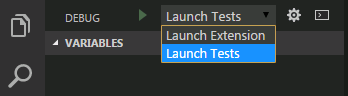
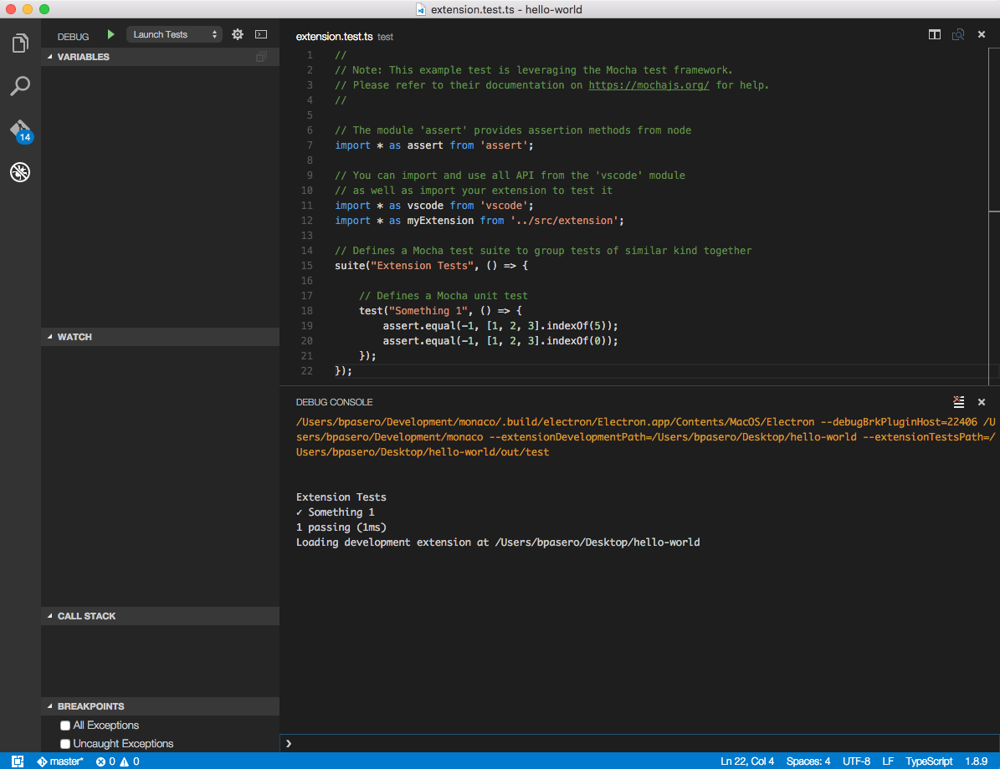

Testing Your Extension
VS Code supports running and debugging tests for your extension that require the VS Code API. These tests will run inside a special instance of VS Code, the Extension Development Host, and have access to the full APIs. We refer to these tests as integration tests, because they go beyond unit tests that can run in isolation from a VS Code window. This documentation focuses on VS Code integration tests. For unit testing, you can use any popular testing framework, like Mocha or Jasmine.
Yo Code Test Scaffolding
The basic yo code generator extension project includes a sample test as well as the necessary infrastructure to run it.
Note: The documentation below assumes that you created a TypeScript extension but the same also applies for a JavaScript extension. However, some file names may be different.
After you’ve created a new extension and opened the project in VS Code, you can select the Launch Tests configuration from the dropdown at the top of the Debug View.

With this configuration chosen, when you run Debug: Start (F5), VS Code launches your extension in the Extension Development Host instance and runs your tests. Test output goes to the Debug Console where you can see the test results.

The generated test uses the Mocha test framework for its test runner and library.
The extension project comes with a test folder that includes an index.ts file which defines the Mocha test runner configuration and an extension.test.ts which has the example Something 1 test. You can typically leave index.ts untouched, but you can modify it to adjust the configuration of Mocha.
|
You can create more test.ts files under the test folder and they will automatically be built (to out/test) and run. The test runner will only consider files matching the name pattern *.test.ts.
Launch Tests configuration
The Launch Tests configuration is defined in the project’s .vscode\launch.json file. It is similar the Launch Extension configuration with the addition of the --extensionTestsPath argument which points to the compiled test files (assuming this is a TypeScript project).
|
Passing Arguments to the Extension Development Host
You can set the file or folder that the test instance should open by inserting the path at the front of the argument list for the launch configuration.
|
This way you can run your tests with predictable content and folder structure.
Excluding test files from your extension package
If you decide to share your extension, you may not want to include the tests in your extension package. The .vscodeignore file lets you exclude test files when you package and publish your extension with the vsce publishing tool. By default, the yo code generated extension project excludes the test and out/test folders.
|
Running tests automatically on Travis CI build machines
You can run extension tests automatically on build machines like Travis CI.
In order to enable automated extension tests, the vscode npm module provides a test command that will:
- download and unzip VS Code
- launch your extension tests inside VS Code
- print the results to the console and return with an exit code according to test success or failure
To enable this test command, open your package.json and add the following entry to the scripts section:
|
You can then enable Travis CI easily with a top-level .travis.yml configuration like this:
|
The script above will run the tests on both Linux and Mac. Note that in order to run the tests on Linux, you need to have
a before_install configuration as above to enable Linux to start VS Code from the build.
There are some optional environment variables to configure the test runner:
| Name | Description |
|---|---|
CODE_VERSION | Version of VS Code to run the tests against (e.g. 0.10.10) |
CODE_DOWNLOAD_URL | Full URL of a VS Code drop to use for running tests against |
CODE_TESTS_PATH | Location of the tests to execute |
CODE_TESTS_WORKSPACE | Location of a workspace to open for the test instance |
Running tests on Windows with AppVeyor
You can also run extension tests on Windows with AppVeyor. To get started, you can review the VS Code integration tests AppVeyor configuration file.
Next Steps
- Debugging your Extension - Learn more about how to run and debug your extension
- vsce - Publish your extension with the VSCE command line tool.
- Extension Manifest file - VS Code extension manifest file reference
- Extension API - Learn about the VS Code extensibility APIs